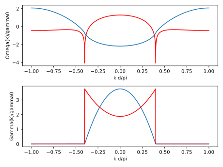
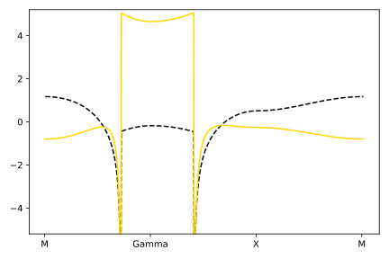
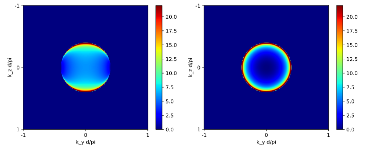

Collective Modes
A module that calculates the band structure and decay rates of different collective modes of quasimomentum k with functions:
It is probably best to illustrate the functionality using some examples.
One-dimensional case
The following code reproduces the band strucuture and decay plots from A. Asenjo-Garcia et al, 10.1103/PhysRevX.7.031024 (Figs. 1b and 1c).
using CollectiveSpins
# Define chain parameters
a = 0.2 # spin-spin distance
polarization_par = [1, 0, 0]
polarization_perp = [0, 1, 1]
k_max = 10000
k_list = [iii*pi/(a*k_max) for iii=-k_max:k_max]
band_structure_par = []
band_structure_perp = []
decay_par = []
decay_perp = []
for k in k_list
append!(band_structure_par, Omega_k_chain(k, a, polarization_par))
append!(band_structure_perp, Omega_k_chain(k, a, polarization_perp))
append!(decay_par, Gamma_k_chain(k, a, polarization_par))
append!(decay_perp, Gamma_k_chain(k, a, polarization_perp))
end
using PyPlot
figure()
subplot(211)
plot(k_list*a/pi, band_structure_par)
plot(k_list*a/pi, band_structure_perp, color="red")
xlabel("k d/pi")
ylabel("Omega(k)/gamma0")
subplot(212)
plot(k_list*a/pi, decay_par)
plot(k_list*a/pi, decay_perp, color="red")
xlabel("k d/pi")
ylabel("Gamma(k)/gamma0")
tight_layout()┌ Warning: No working GUI backend found for matplotlib └ @ PyPlot ~/.julia/packages/PyPlot/XHEG0/src/init.jl:165

Two-dimensional case
For the two-dimensional case, consider the following two examples. The first example reproduces the band structure for a 2D square lattice with in-plane circularly polarized and perpendicular (x-axis) polarized atoms, which can be found in E. Shahmoon et al 10.1103/PhysRevLett.118.113601 (Fig. 4a).
For a particularly elegant derivation of collective frequency shifts and decay rates in 2D atomic arrays, see the thesis of Dominik Wild, "Algorithms and Platforms for Quantum Science and Technology".
using CollectiveSpins
using PyPlot
polarization_par = [0, 1, im]
polarization_perp = [1, 0, 0]
a_vec1 = [0.2, 0]
a_vec2 = [0, 0.2]
k_max = 200
k_listy = [iii*pi/(a_vec1[1]*k_max) for iii=k_max:-1:0]
k_listz = copy(k_listy)
k_listy = append!(k_listy, [iii*pi/(a_vec1[1]*k_max) for iii=0:k_max])
k_listz = append!(k_listz, zeros(k_max+1))
k_listy = append!(k_listy, ones(k_max+1)*pi/a_vec1[1])
k_listz = append!(k_listz, [iii*pi/(a_vec1[1]*k_max) for iii=0:k_max])
k_dim = length(k_listy)
bandstructure_par = zeros(k_dim)
bandstructure_perp = zeros(k_dim)
for iii=1:k_dim
k = [k_listy[iii], k_listz[iii]]
bandstructure_par[iii] = Omega_k_2D(k, a_vec1, a_vec2, polarization_par)
bandstructure_perp[iii] = Omega_k_2D(k, a_vec1, a_vec2, polarization_perp)
end
positions = [0, k_max, 2*k_max, 3*k_max]
labels = ["M", "Gamma", "X", "M"]
figure(figsize=(6,4))
plot(collect(1:k_dim), bandstructure_par, "k--")
plot(collect(1:k_dim), bandstructure_perp, color="gold")
xticks(positions, labels)
ylim([-5.2, 5.2])
tight_layout()
The next example shows how one can compute the decay rates for a 2 square lattices with atoms polarized in-plane (y-axis) and perpendicularly (x-axis). This can be found in A. Asenjo-Garcia et al, 10.1103/PhysRevX.7.031024 (Figs. 2c and 2d).
polarization_par = [0, 1, 0]
polarization_perp = [1, 0, 0]
a_vec1 = [0.2, 0]
a_vec2 = [0, 0.2]
k_max = 200
k_list = [iii*pi/(a_vec1[1]*k_max) for iii=-k_max:k_max]
k_dim = length(k_list)
decay_par = zeros(k_dim, k_dim)
decay_perp = zeros(k_dim, k_dim)
y = 1
for ky in k_list
z = 1
for kz in k_list
k = [ky, kz]
decay_par[z, y] = Gamma_k_2D(k, a_vec1, a_vec2, polarization_par)
decay_perp[z, y] = Gamma_k_2D(k, a_vec1, a_vec2, polarization_perp)
z += 1
end
global y += 1
end
positions = [0, k_max, 2*k_max]
labels = [-1, 0, 1]
figure(figsize=(10,4))
subplot(121)
imshow(decay_par, cmap="jet")
colorbar()
clim(0, 22)
xlabel("k_y d/pi")
ylabel("k_z d/pi")
plt.xticks(positions, labels)
plt.yticks(positions, labels)
subplot(122)
imshow(decay_perp, cmap="jet")
colorbar()
clim(0, 22)
xlabel("k_y d/pi")
ylabel("k_z d/pi")
plt.xticks(positions, labels)
plt.yticks(positions, labels)
tight_layout()